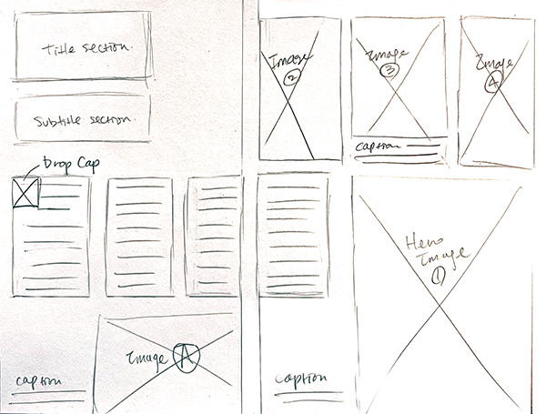
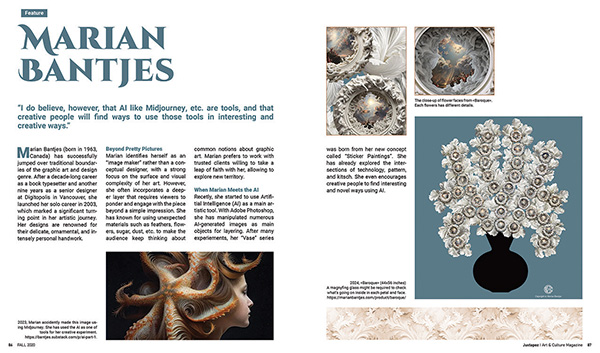
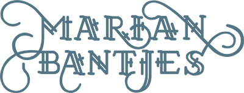

Magazine Spread Layout Project
Role: Graphic Designer
Target: Visual artists and professional designers
Timeline: 2 months, August - September 2025
Software: Adobe InDesign, Illustrator & Photoshop
Sketch
Sections were arranged to create a balanced visual hierarchy, ensuring clarity and readability.
Draft
Feedback indicated that this draft looked boring and lacked visual interest, prompting further refinement.
Solution
The typography for the title was replaced with a stylized visual created by Marian Bantjes, adding personality and depth to the design.